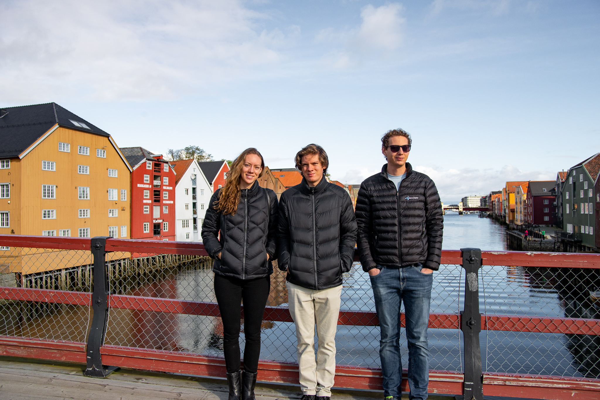
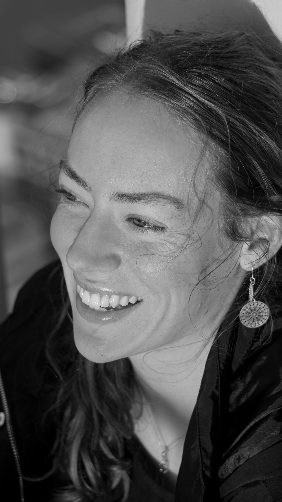

about me.
I've always felt drawn to the arts and design (pun-intended). During highshool, I originally had the idea of studying Architecture. I ended up studying a Bachelor of Education (Primary). Currently, I am studying an Undergraduate Certificate in Interactive Media at the University of the Sunshine Coast - I hope to pursue a career in User Experience and Interface Design and Visual Communication.


A few of the things I've been in my life so far are: a student, a teacher, a sportsperson, a photographer, and a musician. I enjoy travelling on planes and sailboats, and my favourite ways of moving include cycling, pilates, hiking, and running.
what i do.
Do you need creative content? UX/UI design? Graphics? Headshots? Or do you just want a fun model session? Are you looking for some prints to enhance a new business, outdoor space, or room in your house?